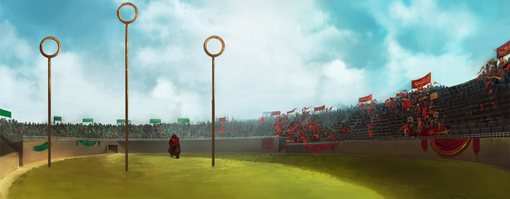
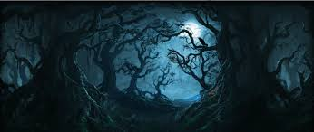
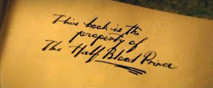

Harry Potter
Hogwarts

Hogwarts School of Witchcraft and Wizardry,
shortened Hogwarts, is a fictional British school of magic for
students aged eleven to eighteen, and is the primary setting for
the first six books in J.K. Rowling's Harry Potter series.[3][4]...read more
quidditch

In the fantasy world of the Harry Potter novels
and movies, Quidditch /ˈkwɪdɪtʃ/ is a magical ...read more
forbiden forest

Harry Potter and the Half-Blood Prince
is a 2009 British-American[3] fantasy film directed by David Yates
and distributedHarry Potter's sixth
year at Hogwarts as he becomes obsessed with a mysterious textbook, falls in
love, and attempts to retrieve a memory that holds the key to Lord Voldemort's
downfall....read more
Half-Blood Prince

In the fantasy world of the Harry Potter novels
and movies, Quidditch /ˈkwɪdɪtʃ/ is a magical ...read more